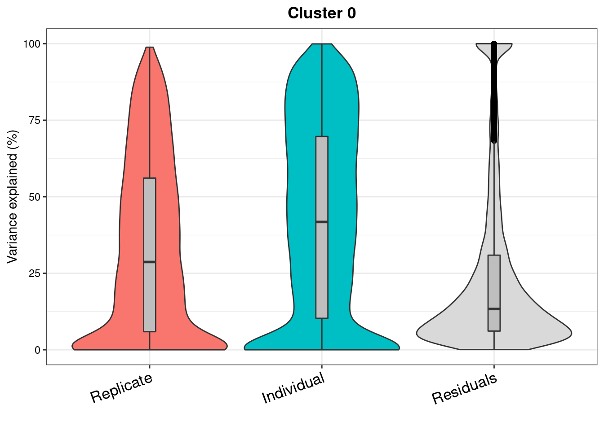
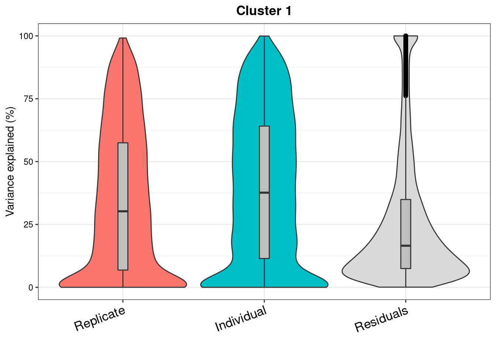
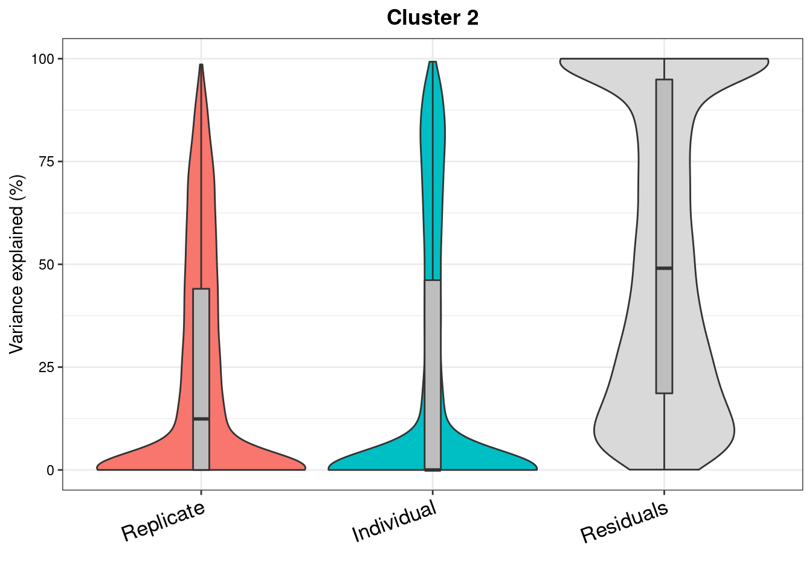
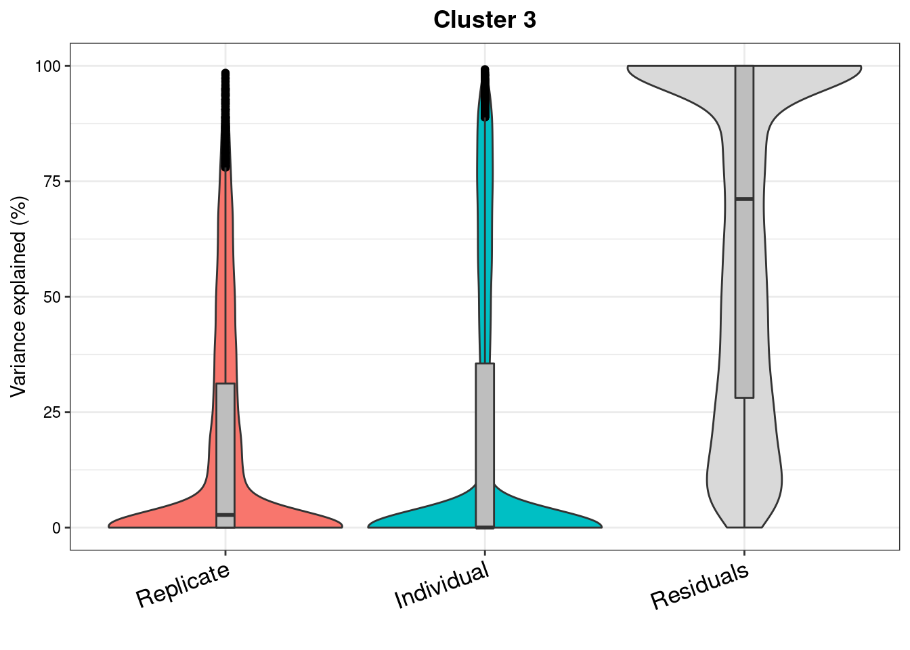
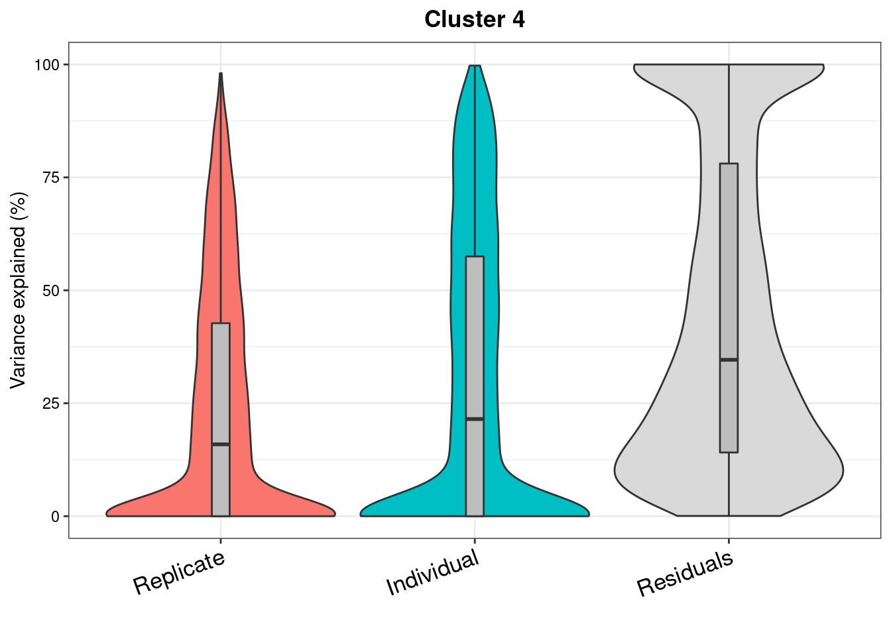
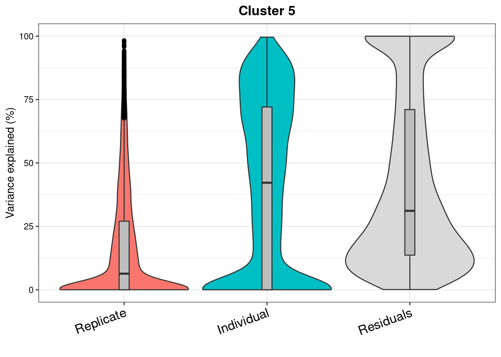
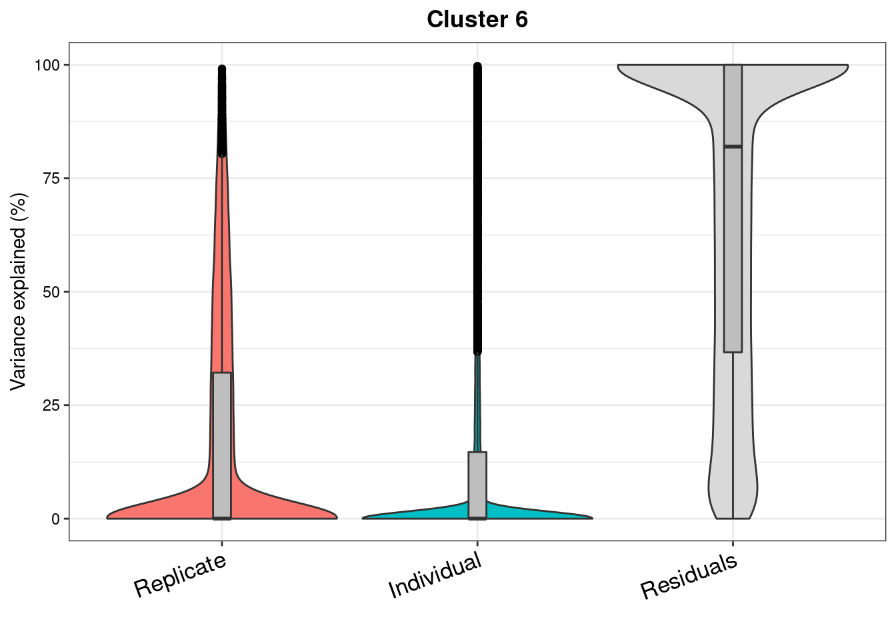
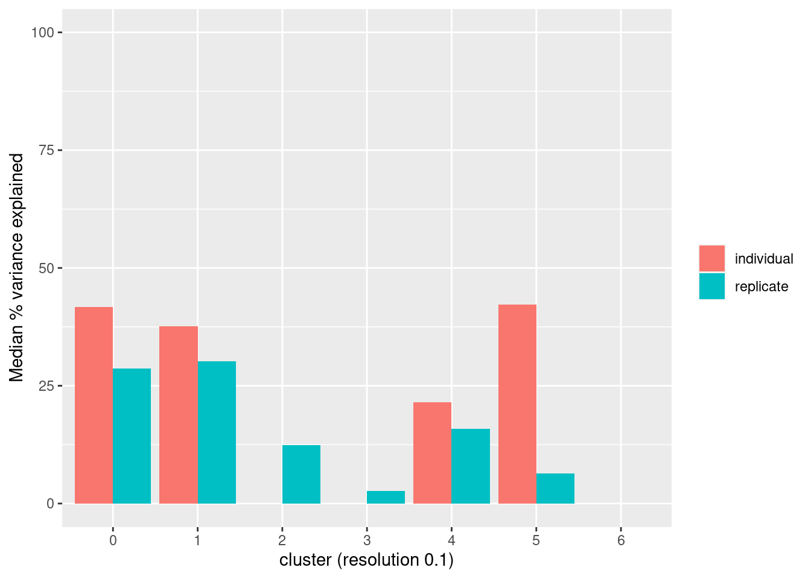

Last updated: 2021-07-05
Checks: 5 2
Knit directory: Embryoid_Body_Pilot_Workflowr/analysis/
This reproducible R Markdown analysis was created with workflowr (version 1.6.2). The Checks tab describes the reproducibility checks that were applied when the results were created. The Past versions tab lists the development history.
The R Markdown is untracked by Git. To know which version of the R Markdown file created these results, you'll want to first commit it to the Git repo. If you're still working on the analysis, you can ignore this warning. When you're finished, you can run wflow_publish to commit the R Markdown file and build the HTML.
Great job! The global environment was empty. Objects defined in the global environment can affect the analysis in your R Markdown file in unknown ways. For reproduciblity it's best to always run the code in an empty environment.
The command set.seed(20200804) was run prior to running the code in the R Markdown file. Setting a seed ensures that any results that rely on randomness, e.g. subsampling or permutations, are reproducible.
Great job! Recording the operating system, R version, and package versions is critical for reproducibility.
Nice! There were no cached chunks for this analysis, so you can be confident that you successfully produced the results during this run.
Using absolute paths to the files within your workflowr project makes it difficult for you and others to run your code on a different machine. Change the absolute path(s) below to the suggested relative path(s) to make your code more reproducible.
| absolute | relative |
|---|---|
| /project2/gilad/katie/Pilot_HumanEBs/Embryoid_Body_Pilot_Workflowr/output/Pseudobulk_VarPart.ByCluster.Res0.1.rds | ../output/Pseudobulk_VarPart.ByCluster.Res0.1.rds |
| /project2/gilad/katie/Pilot_HumanEBs/Embryoid_Body_Pilot_Workflowr/output/pdfs/VarPart_PseudobulkByCluster_res0.1.pdf | ../output/pdfs/VarPart_PseudobulkByCluster_res0.1.pdf |
| /project2/gilad/katie/Pilot_HumanEBs/Embryoid_Body_Pilot_Workflowr/output/figs/VarPart_PseudobulkByCluster_res0.1.png | ../output/figs/VarPart_PseudobulkByCluster_res0.1.png |
| /project2/gilad/katie/Pilot_HumanEBs/Embryoid_Body_Pilot_Workflowr/output/figs/VarPart_Pseudobulk_res0.1_MedianExplainedBarPlot.png | ../output/figs/VarPart_Pseudobulk_res0.1_MedianExplainedBarPlot.png |
Great! You are using Git for version control. Tracking code development and connecting the code version to the results is critical for reproducibility.
The results in this page were generated with repository version c8767ac. See the Past versions tab to see a history of the changes made to the R Markdown and HTML files.
Note that you need to be careful to ensure that all relevant files for the analysis have been committed to Git prior to generating the results (you can use wflow_publish or wflow_git_commit). workflowr only checks the R Markdown file, but you know if there are other scripts or data files that it depends on. Below is the status of the Git repository when the results were generated:
Ignored files:
Ignored: .Rhistory
Ignored: .Rproj.user/
Ignored: analysis/.Rhistory
Ignored: output/.Rhistory
Untracked files:
Untracked: GSE122380_raw_counts.txt.gz
Untracked: UTF1_plots.Rmd
Untracked: analysis/IntegrateReference_SCTregressCaoPlusScHCL_JustEarlyEcto.Rmd
Untracked: analysis/IntegrateReference_SCTregressCaoPlusScHCL_JustEndo.Rmd
Untracked: analysis/IntegrateReference_SCTregressCaoPlusScHCL_JustMeso.Rmd
Untracked: analysis/IntegrateReference_SCTregressCaoPlusScHCL_JustNeuralCrest.Rmd
Untracked: analysis/IntegrateReference_SCTregressCaoPlusScHCL_JustNeuron.Rmd
Untracked: analysis/IntegrateReference_SCTregressCaoPlusScHCL_JustPluri.Rmd
Untracked: analysis/OLD/
Untracked: analysis/Pseudobulk_Limma_Harmony.BatchIndividual_ClusterRes0.8_minPCT0.2.Rmd
Untracked: analysis/Pseudobulk_Limma_Harmony.BatchIndividual_ClusterRes1_minPCT0.2.Rmd
Untracked: analysis/Pseudobulk_VariancePartition_Harmony.Batchindividual_ClusterRes0.1_byCluster.Rmd
Untracked: analysis/RefInt_ComparingFulltoPartialIntegrationAnnotations.Rmd
Untracked: analysis/ReferenceAnn_DE.Rmd
Untracked: analysis/SingleCell_HierarchicalClustering_NoGeneFilter.Rmd
Untracked: analysis/SingleCell_VariancePartitionByCluster_Harmony.Batchindividual_ClusterRes0.1_minPCT0.2.Rmd
Untracked: analysis/VarPartPlots_res0.1_SCT.Rmd
Untracked: analysis/VarPart_SC_res0.1_SCT.Rmd
Untracked: analysis/child/
Untracked: analysis/k10topics_Explore.Rmd
Untracked: analysis/k6topics_Explore.Rmd
Untracked: build_refint_scale.R
Untracked: build_refint_sct.R
Untracked: build_stuff.R
Untracked: build_varpart_sc.R
Untracked: code/.ipynb_checkpoints/
Untracked: code/CellRangerPreprocess.Rmd
Untracked: code/ConvertToDGE.Rmd
Untracked: code/ConvertToDGE_PseudoBulk.Rmd
Untracked: code/ConvertToDGE_SingleCellRes_minPCT0.2.Rmd
Untracked: code/EB.getHumanMetadata.Rmd
Untracked: code/GEO_processed_data.Rmd
Untracked: code/PowerAnalysis_NoiseRatio.ipynb
Untracked: code/Untitled.ipynb
Untracked: code/Untitled1.ipynb
Untracked: code/compile_fits.Rmd
Untracked: code/fit_all_models.sh
Untracked: code/fit_poisson_nmf.R
Untracked: code/fit_poisson_nmf.sbatch
Untracked: code/functions_for_fit_comparison.Rmd
Untracked: code/get_genelist_byPCTthresh.Rmd
Untracked: code/prefit_poisson_nmf.R
Untracked: code/prefit_poisson_nmf.sbatch
Untracked: code/prepare_data_for_fastTopics.Rmd
Untracked: data/HCL_Fig1_adata.h5ad
Untracked: data/HCL_Fig1_adata.h5seurat
Untracked: data/dge/
Untracked: data/dge_raw_data.tar.gz
Untracked: data/ref.expr.rda
Untracked: figure/
Untracked: output/CR_sampleQCrds/
Untracked: output/CaoEtAl.Obj.CellsOfAllClusters.ProteinCodingGenes.rds
Untracked: output/CaoEtAl.Obj.rds
Untracked: output/ClusterInfo_res0.1.csv
Untracked: output/DGELists/
Untracked: output/DownSampleVarPart.rds
Untracked: output/Frequency.MostCommonAnnotation.FiveNearestRefCells.csv
Untracked: output/GEOsubmissionProcessedFiles/
Untracked: output/GeneLists_by_minPCT/
Untracked: output/MostCommonAnnotation.FiveNearestRefCells.csv
Untracked: output/NearestReferenceCell.Cao.hESC.EuclideanDistanceinHarmonySpace.csv
Untracked: output/NearestReferenceCell.Cao.hESC.FrequencyofEachAnnotation.csv
Untracked: output/NearestReferenceCell.SCTregressRNAassay.Cao.hESC.EuclideanDistanceinHarmonySpace.csv
Untracked: output/NearestReferenceCell.SCTregressRNAassay.Cao.hESC.FrequencyofEachAnnotation.csv
Untracked: output/Pseudobulk_Limma_res0.1_OnevAllTopTables.csv
Untracked: output/Pseudobulk_Limma_res0.1_OnevAll_top10Upregby_adjP.csv
Untracked: output/Pseudobulk_Limma_res0.1_OnevAll_top10Upregby_logFC.csv
Untracked: output/Pseudobulk_Limma_res0.5_OnevAllTopTables.csv
Untracked: output/Pseudobulk_Limma_res0.8_OnevAllTopTables.csv
Untracked: output/Pseudobulk_Limma_res1_OnevAllTopTables.csv
Untracked: output/Pseudobulk_VarPart.ByCluster.Res0.1.rds
Untracked: output/ResidualVariances_fromDownSampAnalysis.csv
Untracked: output/SingleCell_VariancePartition_RNA_Res0.1_minPCT0.2.rds
Untracked: output/SingleCell_VariancePartition_Res0.1_minPCT0.2.rds
Untracked: output/SingleCell_VariancePartition_SCT_Res0.1_minPCT0.2.rds
Untracked: output/TopicModelling_k10_top10drivergenes.byBeta.csv
Untracked: output/TopicModelling_k6_top10drivergenes.byBeta.csv
Untracked: output/TopicModelling_k6_top15drivergenes.byZ.csv
Untracked: output/TranferredAnnotations_ReferenceInt_JustEarlyEcto.csv
Untracked: output/TranferredAnnotations_ReferenceInt_JustEndoderm.csv
Untracked: output/TranferredAnnotations_ReferenceInt_JustMeso.csv
Untracked: output/TranferredAnnotations_ReferenceInt_JustNeuralCrest.csv
Untracked: output/TranferredAnnotations_ReferenceInt_JustNeuron.csv
Untracked: output/TranferredAnnotations_ReferenceInt_JustPluripotent.csv
Untracked: output/VarPart.ByCluster.Res0.1.rds
Untracked: output/azimuth/
Untracked: output/downsamp_10800cells_10subreps_medianexplainedbyresiduals_varpart_PsB.rds
Untracked: output/downsamp_16200cells_10subreps_medianexplainedbyresiduals_varpart_PsB.rds
Untracked: output/downsamp_21600cells_10subreps_medianexplainedbyresiduals_varpart_PsB.rds
Untracked: output/downsamp_2700cells_10subreps_medianexplainedbyresiduals_varpart_PsB.rds
Untracked: output/downsamp_2700cells_10subreps_medianexplainedbyresiduals_varpart_scres.rds
Untracked: output/downsamp_5400cells_10subreps_medianexplainedbyresiduals_varpart_PsB.rds
Untracked: output/downsamp_7200cells_10subreps_medianexplainedbyresiduals_varpart_PsB.rds
Untracked: output/fasttopics/
Untracked: output/figs/
Untracked: output/merge.Cao.SCTwRegressOrigIdent.rds
Untracked: output/merge.all.SCTwRegressOrigIdent.Harmony.rds
Untracked: output/merged.SCT.counts.matrix.rds
Untracked: output/merged.raw.counts.matrix.rds
Untracked: output/mergedObjects/
Untracked: output/pdfs/
Untracked: output/sampleQCrds/
Untracked: output/splitgpm_gsea_results/
Untracked: slurm-12005914.out
Untracked: slurm-12005923.out
Unstaged changes:
Deleted: analysis/IntegrateAnalysis.afterFilter.HarmonyBatch.Rmd
Deleted: analysis/IntegrateAnalysis.afterFilter.HarmonyBatchSampleIDindividual.Rmd
Modified: analysis/IntegrateAnalysis.afterFilter.HarmonyBatchindividual.Rmd
Deleted: analysis/IntegrateAnalysis.afterFilter.NOHARMONYjustmerge.Rmd
Deleted: analysis/IntegrateAnalysis.afterFilter.SCTregressBatchIndividual.Rmd
Deleted: analysis/IntegrateAnalysis.afterFilter.SCTregressBatchIndividualHarmonyBatchindividual.Rmd
Modified: analysis/Pseudobulk_HierarchicalClustering_Harmony.Batchindividual_ClusterRes0.1_minPCT0.2.Rmd
Modified: analysis/Pseudobulk_HierarchicalClustering_Harmony.Batchindividual_ClusterRes0.5_minPCT0.2.Rmd
Modified: analysis/Pseudobulk_HierarchicalClustering_Harmony.Batchindividual_ClusterRes0.8_minPCT0.2.Rmd
Modified: analysis/Pseudobulk_HierarchicalClustering_Harmony.Batchindividual_ClusterRes1_minPCT0.2.Rmd
Modified: analysis/Pseudobulk_Limma_Harmony.BatchIndividual_ClusterRes0.1_minPCT0.2.Rmd
Modified: analysis/Pseudobulk_Limma_Harmony.BatchIndividual_ClusterRes0.5_minPCT0.2.Rmd
Modified: analysis/Pseudobulk_VariancePartition_Harmony.Batchindividual_ClusterRes0.1_minPCT0.2.Rmd
Modified: analysis/Pseudobulk_VariancePartition_Harmony.Batchindividual_ClusterRes0.5_minPCT0.2.Rmd
Modified: analysis/Pseudobulk_VariancePartition_Harmony.Batchindividual_ClusterRes0.8_minPCT0.2.Rmd
Modified: analysis/Pseudobulk_VariancePartition_Harmony.Batchindividual_ClusterRes1_minPCT0.2.Rmd
Deleted: analysis/RunscHCL_HarmonyBatchInd.Rmd
Note that any generated files, e.g. HTML, png, CSS, etc., are not included in this status report because it is ok for generated content to have uncommitted changes.
There are no past versions. Publish this analysis with wflow_publish() to start tracking its development.
library(dplyr)
Attaching package: 'dplyr'The following objects are masked from 'package:stats':
filter, lagThe following objects are masked from 'package:base':
intersect, setdiff, setequal, unionlibrary(limma)
library(edgeR)
library(variancePartition)Loading required package: ggplot2Loading required package: foreachLoading required package: scalesLoading required package: BiobaseLoading required package: BiocGenericsLoading required package: parallel
Attaching package: 'BiocGenerics'The following objects are masked from 'package:parallel':
clusterApply, clusterApplyLB, clusterCall, clusterEvalQ,
clusterExport, clusterMap, parApply, parCapply, parLapply,
parLapplyLB, parRapply, parSapply, parSapplyLBThe following object is masked from 'package:limma':
plotMAThe following objects are masked from 'package:dplyr':
combine, intersect, setdiff, unionThe following objects are masked from 'package:stats':
IQR, mad, sd, var, xtabsThe following objects are masked from 'package:base':
Filter, Find, Map, Position, Reduce, anyDuplicated, append,
as.data.frame, basename, cbind, colnames, dirname, do.call,
duplicated, eval, evalq, get, grep, grepl, intersect, is.unsorted,
lapply, mapply, match, mget, order, paste, pmax, pmax.int, pmin,
pmin.int, rank, rbind, rownames, sapply, setdiff, sort, table,
tapply, union, unique, unsplit, which, which.max, which.minWelcome to Bioconductor
Vignettes contain introductory material; view with
'browseVignettes()'. To cite Bioconductor, see
'citation("Biobase")', and for packages 'citation("pkgname")'.
Attaching package: 'variancePartition'The following object is masked from 'package:limma':
classifyTestsFlibrary(ggplot2)choose parameters (integration type, clustering res, min pct threshold)
f<- 'Harmony.Batchindividual'
pct<-0.2
res<- 'SCT_snn_res.0.1'path<- here::here("output/DGELists/")
submerged<- readRDS(paste0(path,"Pseudobulk_dge_",f, "_", res,"_minPCT",pct,".rds"))clusters<- as.vector(sort(unique(submerged$samples[,"cluster"])))
varpart.list<- NULL
voom.plots<- NULL
for(i in 1:length(clusters)){
cluster<- clusters[i]
sub<- submerged[, submerged$samples[,"cluster"] == cluster]
#remove ribosomal genes
genes.ribo <- grep('^RP',rownames(sub),value=T)
genes.no.ribo <- rownames(sub)[which(!(rownames(sub) %in% genes.ribo))]
sub$counts <- sub$counts[which(rownames(sub$counts) %in% genes.no.ribo),]
#filter to expressed genes
genes.keep<- rownames(sub)[rowSums(sub$counts)>0]
sub<- sub[rownames(sub$counts) %in% genes.keep,]
#CalcNormFactors
sub<- calcNormFactors(sub, method="TMM")
#specify design matrix
design<- model.matrix(~sub$samples$batch+sub$samples$ind)
#voom
v<- voom(sub, design, plot=T)
voom.plots[[cluster]]<- v
#form
form<- ~ (1|batch) + (1|ind)
#run variance partition
varpart<- suppressWarnings(fitExtractVarPartModel(v, form, sub$samples, useWeights=TRUE, quiet=TRUE, showWarnings = FALSE))
#store varpart results
varpart.list[[cluster]]<- varpart
}
voom.plotssaveRDS(varpart.list, "/project2/gilad/katie/Pilot_HumanEBs/Embryoid_Body_Pilot_Workflowr/output/Pseudobulk_VarPart.ByCluster.Res0.1.rds")varpart.list<- readRDS("/project2/gilad/katie/Pilot_HumanEBs/Embryoid_Body_Pilot_Workflowr/output/Pseudobulk_VarPart.ByCluster.Res0.1.rds")vp.bar.list<- NULL
for (i in 1:length(varpart.list)){
v<- varpart.list[[i]]
colnames(v)<- c("Replicate", "Individual", "Residuals")
#vp<- sortCols(v)
vp.bar.list[[i]]<-plotVarPart(v, main= paste0("Cluster ", (i-1)))
}
vp.bar.list[[1]]
[[2]]
[[3]]
[[4]]
[[5]]
[[6]]
[[7]]
pdf(file = "/project2/gilad/katie/Pilot_HumanEBs/Embryoid_Body_Pilot_Workflowr/output/pdfs/VarPart_PseudobulkByCluster_res0.1.pdf")
vp.bar.list
dev.off()png(file= "/project2/gilad/katie/Pilot_HumanEBs/Embryoid_Body_Pilot_Workflowr/output/figs/VarPart_PseudobulkByCluster_res0.1.png", width= 7.5, height=7.5, units= "in", res= 1080)
vp.bar.list
dev.off()med.batch<- NULL
med.ind<- NULL
for (i in 1:7){
v<- varpart.list[[i]]
mb<-median(v$batch)
mi<- median(v$ind)
med.batch[i]<- mb
med.ind[i]<- mi
}
cluster<- c(0:6)
med.batch<- cbind(cluster, med.batch)
med.ind<- cbind(cluster, med.ind)
meds<- c(rep("replicate", 7), rep("individual", 7))
med.df<- rbind(med.batch, med.ind)
med.df<- as.data.frame(cbind(meds, med.df))
colnames(med.df)<- c("meds","cluster", "value")g<- ggplot(med.df, aes(x=cluster, y=(as.numeric(as.character(value))*100), fill=meds)) +geom_col(position="dodge") +ylim(0,100) +xlab("cluster (resolution 0.1)")+ylab("Median % variance explained")+theme(legend.title = element_blank())
g
png(file= "/project2/gilad/katie/Pilot_HumanEBs/Embryoid_Body_Pilot_Workflowr/output/figs/VarPart_Pseudobulk_res0.1_MedianExplainedBarPlot.png", width= 4, height=3, units= "in", res= 1080)
g
dev.off()sessionInfo()R version 3.6.1 (2019-07-05)
Platform: x86_64-pc-linux-gnu (64-bit)
Running under: Scientific Linux 7.4 (Nitrogen)
Matrix products: default
BLAS/LAPACK: /software/openblas-0.2.19-el7-x86_64/lib/libopenblas_haswellp-r0.2.19.so
locale:
[1] C
attached base packages:
[1] parallel stats graphics grDevices utils datasets methods
[8] base
other attached packages:
[1] variancePartition_1.16.1 Biobase_2.46.0 BiocGenerics_0.32.0
[4] scales_1.1.1 foreach_1.5.0 ggplot2_3.3.3
[7] edgeR_3.28.1 limma_3.42.2 dplyr_1.0.2
[10] workflowr_1.6.2
loaded via a namespace (and not attached):
[1] Rcpp_1.0.6 locfit_1.5-9.4 here_0.1-11
[4] lattice_0.20-38 prettyunits_1.1.1 gtools_3.8.2
[7] rprojroot_2.0.2 digest_0.6.27 plyr_1.8.6
[10] R6_2.5.0 evaluate_0.14 highr_0.8
[13] pillar_1.4.7 gplots_3.0.4 rlang_0.4.10
[16] progress_1.2.2 minqa_1.2.4 gdata_2.18.0
[19] nloptr_1.2.2.2 Matrix_1.2-18 rmarkdown_2.3
[22] labeling_0.4.2 splines_3.6.1 BiocParallel_1.20.1
[25] lme4_1.1-23 statmod_1.4.34 stringr_1.4.0
[28] munsell_0.5.0 compiler_3.6.1 httpuv_1.5.4
[31] xfun_0.16 pkgconfig_2.0.3 htmltools_0.5.0
[34] tidyselect_1.1.0 tibble_3.0.4 codetools_0.2-16
[37] crayon_1.3.4 withr_2.4.2 later_1.1.0.1
[40] MASS_7.3-51.4 bitops_1.0-6 grid_3.6.1
[43] nlme_3.1-140 gtable_0.3.0 lifecycle_0.2.0
[46] git2r_0.26.1 magrittr_2.0.1 KernSmooth_2.23-15
[49] stringi_1.5.3 farver_2.0.3 reshape2_1.4.4
[52] fs_1.4.2 promises_1.1.1 doParallel_1.0.15
[55] colorRamps_2.3 ellipsis_0.3.1 generics_0.1.0
[58] vctrs_0.3.6 boot_1.3-23 iterators_1.0.12
[61] tools_3.6.1 glue_1.4.2 purrr_0.3.4
[64] hms_0.5.3 pbkrtest_0.4-8.6 yaml_2.2.1
[67] colorspace_2.0-0 caTools_1.18.0 knitr_1.29
sessionInfo()R version 3.6.1 (2019-07-05)
Platform: x86_64-pc-linux-gnu (64-bit)
Running under: Scientific Linux 7.4 (Nitrogen)
Matrix products: default
BLAS/LAPACK: /software/openblas-0.2.19-el7-x86_64/lib/libopenblas_haswellp-r0.2.19.so
locale:
[1] C
attached base packages:
[1] parallel stats graphics grDevices utils datasets methods
[8] base
other attached packages:
[1] variancePartition_1.16.1 Biobase_2.46.0 BiocGenerics_0.32.0
[4] scales_1.1.1 foreach_1.5.0 ggplot2_3.3.3
[7] edgeR_3.28.1 limma_3.42.2 dplyr_1.0.2
[10] workflowr_1.6.2
loaded via a namespace (and not attached):
[1] Rcpp_1.0.6 locfit_1.5-9.4 here_0.1-11
[4] lattice_0.20-38 prettyunits_1.1.1 gtools_3.8.2
[7] rprojroot_2.0.2 digest_0.6.27 plyr_1.8.6
[10] R6_2.5.0 evaluate_0.14 highr_0.8
[13] pillar_1.4.7 gplots_3.0.4 rlang_0.4.10
[16] progress_1.2.2 minqa_1.2.4 gdata_2.18.0
[19] nloptr_1.2.2.2 Matrix_1.2-18 rmarkdown_2.3
[22] labeling_0.4.2 splines_3.6.1 BiocParallel_1.20.1
[25] lme4_1.1-23 statmod_1.4.34 stringr_1.4.0
[28] munsell_0.5.0 compiler_3.6.1 httpuv_1.5.4
[31] xfun_0.16 pkgconfig_2.0.3 htmltools_0.5.0
[34] tidyselect_1.1.0 tibble_3.0.4 codetools_0.2-16
[37] crayon_1.3.4 withr_2.4.2 later_1.1.0.1
[40] MASS_7.3-51.4 bitops_1.0-6 grid_3.6.1
[43] nlme_3.1-140 gtable_0.3.0 lifecycle_0.2.0
[46] git2r_0.26.1 magrittr_2.0.1 KernSmooth_2.23-15
[49] stringi_1.5.3 farver_2.0.3 reshape2_1.4.4
[52] fs_1.4.2 promises_1.1.1 doParallel_1.0.15
[55] colorRamps_2.3 ellipsis_0.3.1 generics_0.1.0
[58] vctrs_0.3.6 boot_1.3-23 iterators_1.0.12
[61] tools_3.6.1 glue_1.4.2 purrr_0.3.4
[64] hms_0.5.3 pbkrtest_0.4-8.6 yaml_2.2.1
[67] colorspace_2.0-0 caTools_1.18.0 knitr_1.29